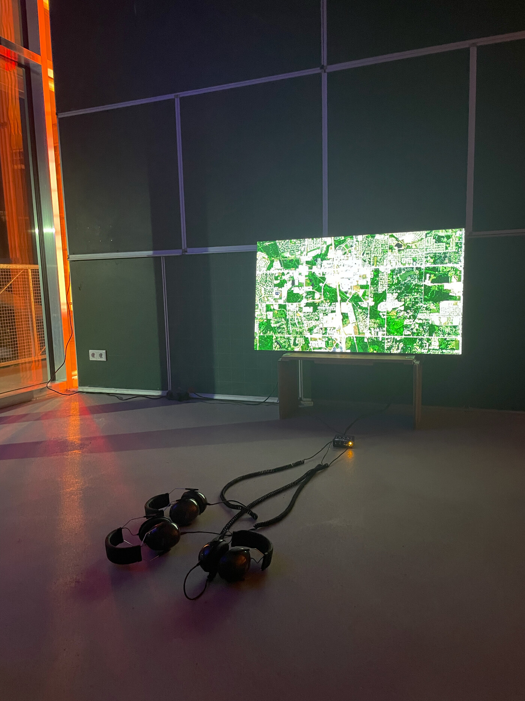
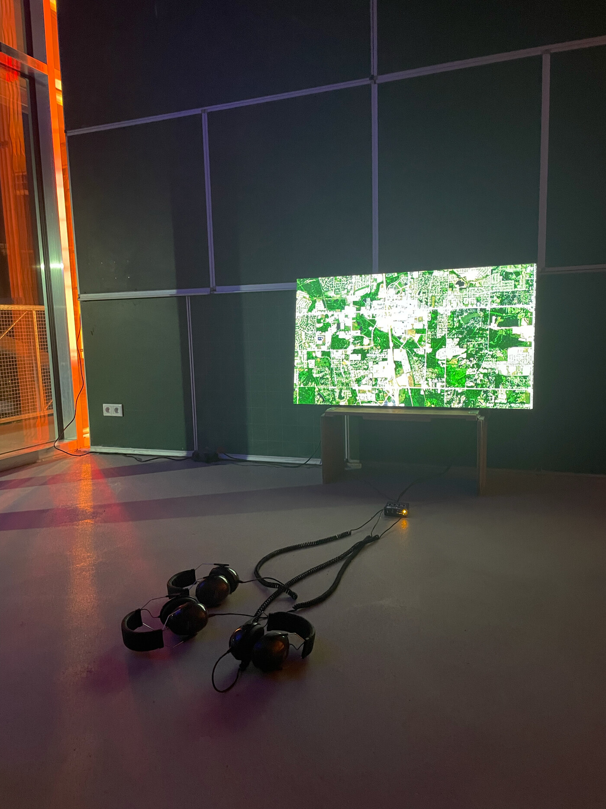

grayson earle
Return to Sender
"Return to Sender" is a political art project designed to unveil the hidden logistics networks behind Amazon's returns process, highlighting the labor and environmental impacts involved. Participants will purchase GPS tracking devices and return them to Amazon from different locations across the United States. By tracing the path these devices take back to warehouses or repair sites, the project seeks to disrupt the conventional consumer-worker relationship and foster new forms of solidarity.
The project involves both a practical component and a symbolic gesture. Participants are encouraged to include a letter addressed to a worker within the return package, expressing care and support. This act challenges the anonymity and invisibility often associated with corporate logistics, and serves as a reminder of the human element within these systems.
"Return to Sender" aims to challenge the status quo of corporate logistics, advocating for broader political goals such as regional unionization efforts and the nationalization of corporate giants like Amazon. The project's Supply Chain Manifest tool will chart the journey of each returned package, making visible the various warehouses, repair sites, and waste disposal locations involved in Amazon's logistics process. Through this, the project seeks to illuminate the often-overlooked labor and environmental repercussions of our consumer habits, encouraging a more informed and conscientious public.
Amazon Return with a Recording Device Inside
Exhibited as part of this project is a solo work which consists of returning a smart phone purchased from Amazon.de. The device was altered to record 52 hours of transit to its eventual destination and transmit the audio back to me over the cell network. View that work here.
ZK/U: No Departures without Arrivals (Berlin Art Week)
The work was exhibited at ZK/U during Berlin Art Week in 2024.
{kind=link}
 

{kind=link}
{kind=link}
{kind=link}
{kind=link}
{kind=link}
{kind=link}
{kind=link}
{kind=link}